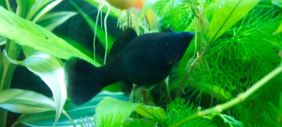

Tuesday, December the 19th, 2006
back to: title, date or indexes

This is a black molly which lives—happily, as we can see—in Claire's Pond. I am honoured to tell you that it is called Frank, after your esteemed editor. Next time I go on holiday, Frank can take over the day to day running of Hooting Yard. We lack a certain piscine something at the moment, and I expect Frank will put that right.